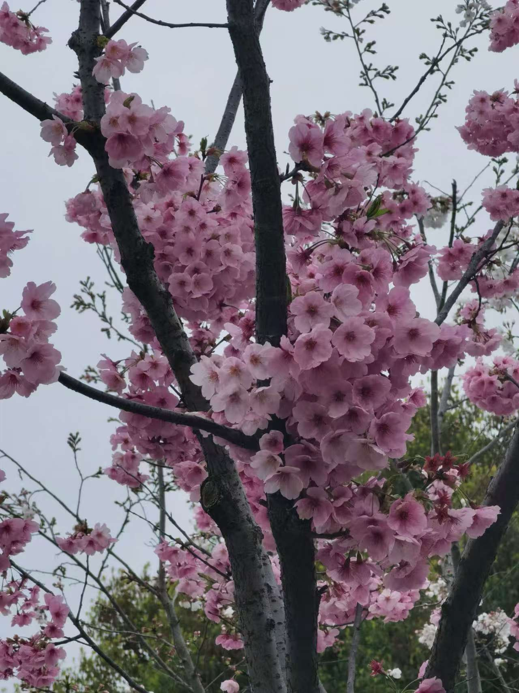
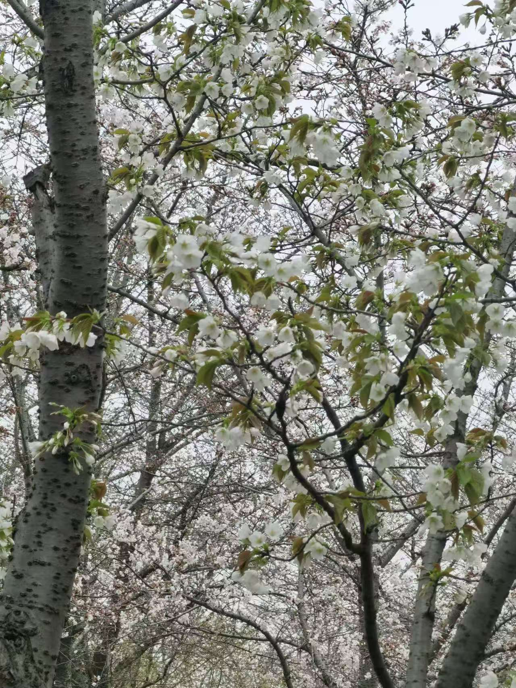
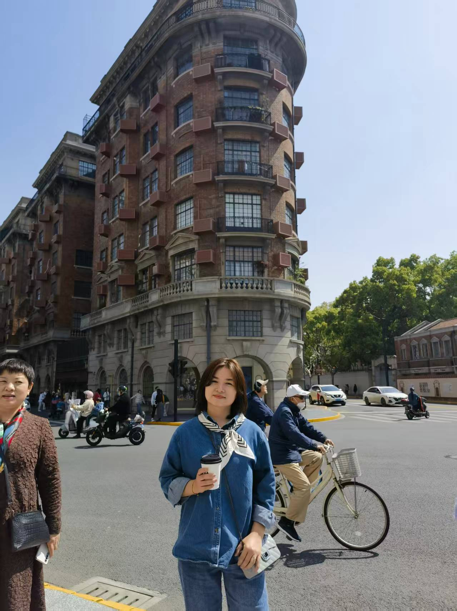
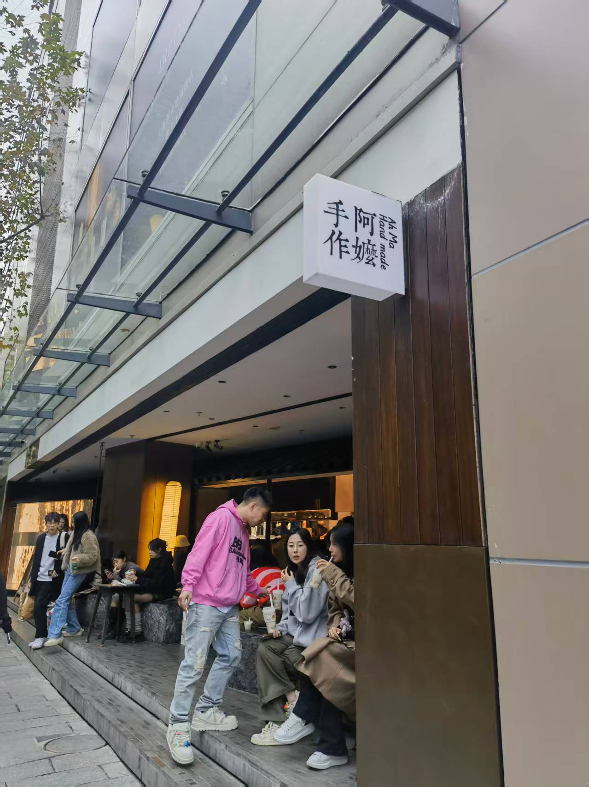
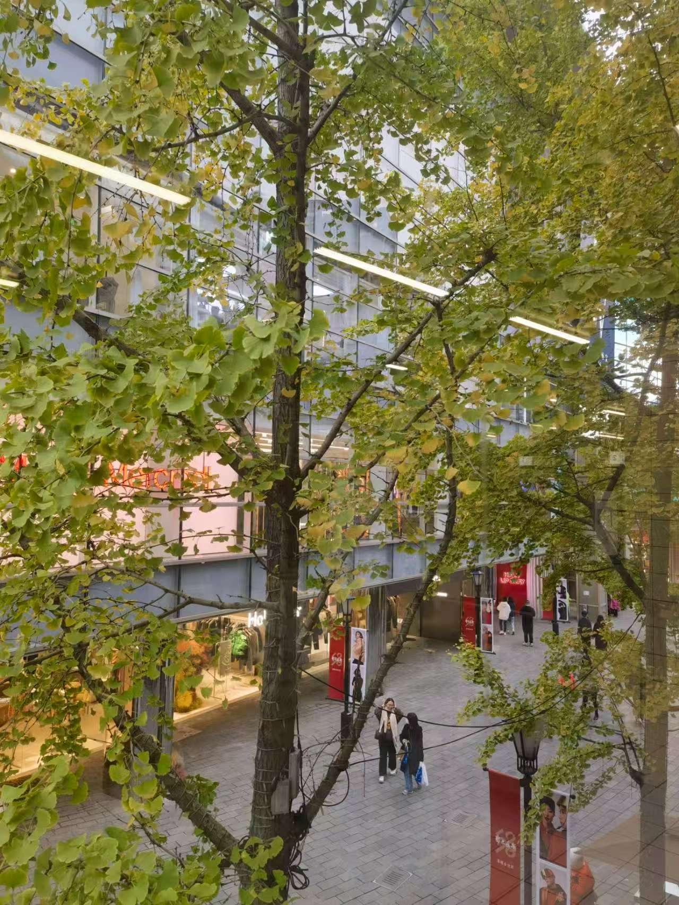
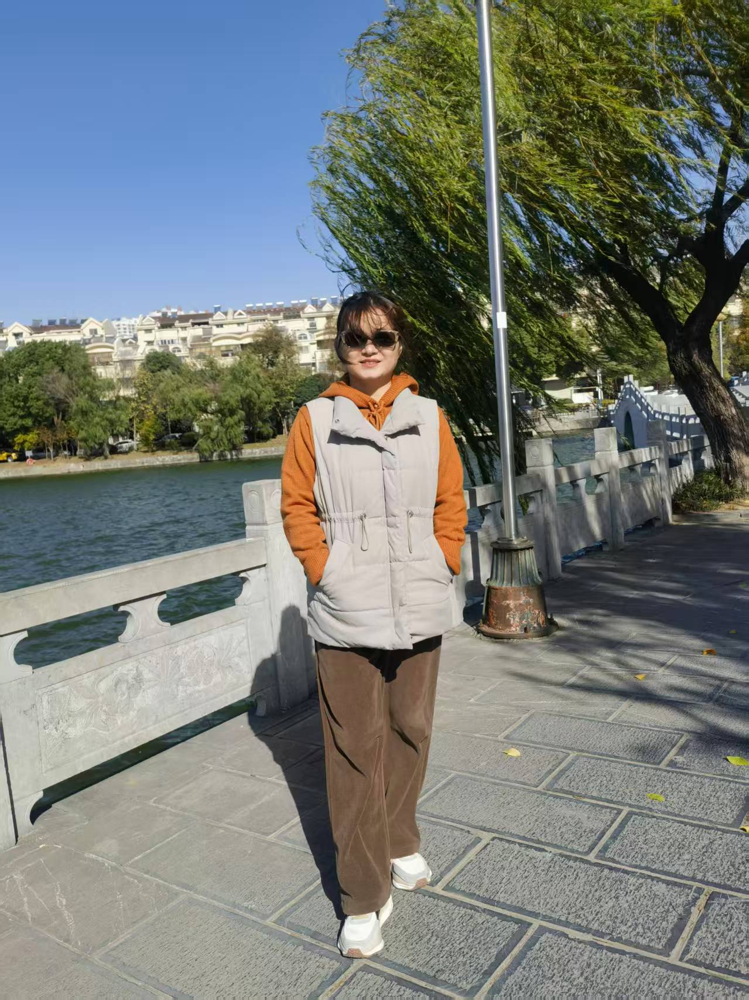
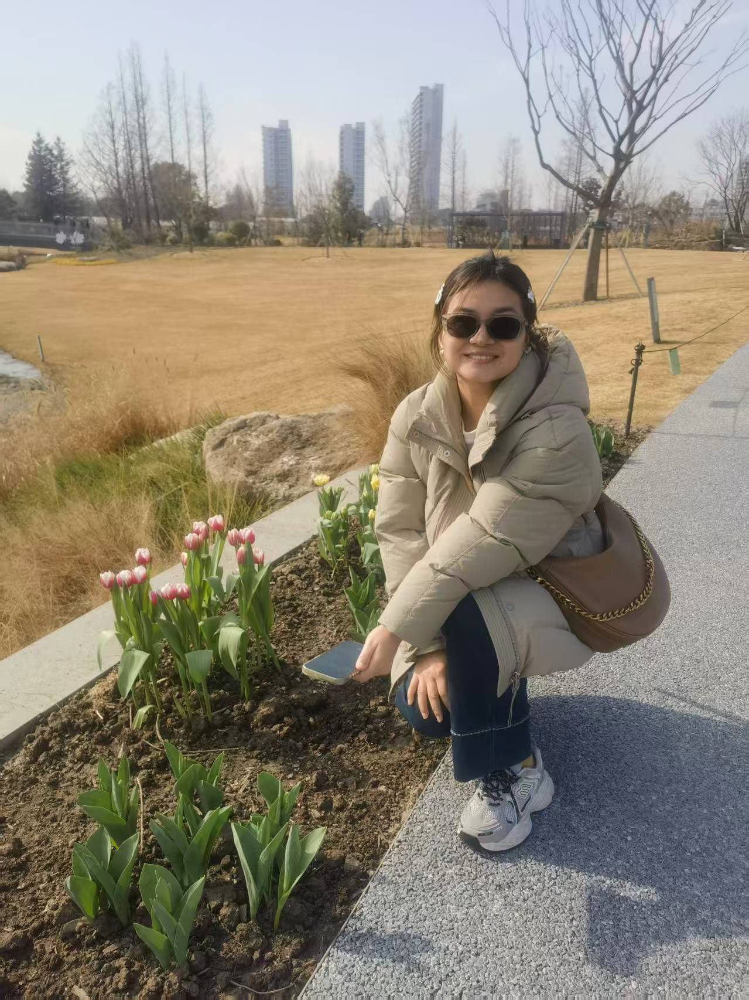
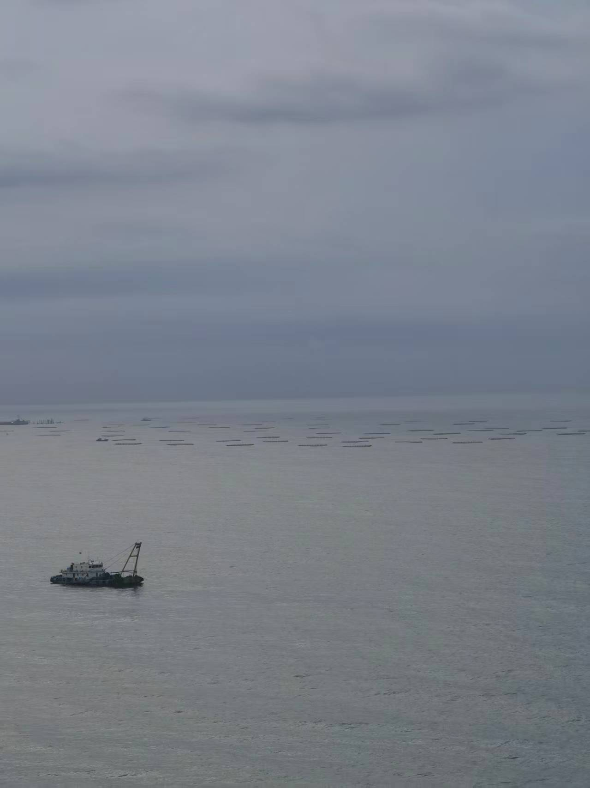

上海，是一座让人想一逛再逛的城市。🏙️
说不上为什么，每次来上海，总有一种特别的感觉。可能是外滩的江风太温柔，可能是弄堂里的烟火气太真实，也可能是那些藏在街角的咖啡馆太懂人心。这次没有做太多攻略，就想随意走走，用镜头记录下这座城市安静又热闹的样子。
外滩 · 江风与天际线
第一站当然是外滩。白天的外滩和夜晚完全是两副面孔。白天它像个从容的绅士，黄浦江的水波在阳光下闪闪发光，对岸的陆家嘴高楼林立，东方明珠、上海中心、环球金融中心一字排开，气场十足。

站在江边，吹着微风，看着来往的游船，忽然觉得时间也慢了下来。这就是上海的魅力吧 — 明明是最繁华的都市，却总能找到让人放空的角落。拍了无数张照片，每一张都舍不得删，因为阳光打在脸上的角度刚刚好，因为身后的天际线太美，因为这一刻太值得记住。
夜色 · 另一种上海
如果说白天的上海是精致的，那夜晚的上海就是浪漫的。华灯初上，整座城市换上了另一套装扮。

站在高处看夜景，万家灯火在脚下铺开，像一片星星掉进了人间。上海的夜，有一种让人心安的魔力。远处的车流变成了光的河流，缓缓流动。和朋友坐在阳台上聊聊天，喝杯茶，什么都不用想，就已经是最好的时光。

水边的午后，阳光穿过树叶洒下来，斑驳的光影落在肩上。上海不只有钢筋水泥，也有这些柔软的时刻。

换个角度看夜景，又是完全不同的美。天台上吹着晚风，身后的霓虹灯勾勒出城市的天际线。这一刻，你会觉得上海真的好大，又好温柔。
街头巷尾 · 市井烟火
如果说高楼大厦是上海的面子，那街头巷尾就是上海的里子。穿过繁华的商业街，拐进一条小马路，世界突然安静了下来。

在城隍庙附近的老街上，头顶挂满了五彩的灯笼。红的、黄的、绿的，在暮色里亮起来的时候，整条街都变得温暖又热闹。空气里飘着小笼包和生煎的香味，耳边是南腔北调的聊天声。这才是上海最真实的样子 — 热闹、包容、充满了生活的温度。

走在步行街上，头顶的灯饰像一条发光的河流，延伸到看不尽的远方。人们三三两两地走着，笑着，拍照着。每个人都是这座城市的一部分，每个人都有自己的上海故事。

南京路步行街上永远人来人往。这里是上海最热闹的地方之一，老字号和时尚店铺比邻而居，传统和现代在这里交汇。走在人群中，感受这座城市的脉搏，有一种说不出的活力在血液里流淌。

最后一站，还是回到了步行街。夜幕完全降临，灯光变得格外璀璨。慢慢走着，不用赶时间，也不用想太多。看着橱窗里的陈列，闻着路边飘来的美食香味，觉得这样的夜晚，真好。
走走停停，才是旅行的意义
这次上海之行，没有打卡式的匆忙，没有一定要去的景点清单。就是走走停停，看到喜欢的街角就多待一会儿，闻到好闻的咖啡香就推门进去。这种随性的旅行方式，让我看到了上海的另一面 — 它不只是一座快节奏的都市，更是一座值得慢慢品味的城市。
如果你也来上海，不妨放慢脚步。去外滩吹吹风，去老城厢逛逛弄堂，去南京路看一场灯光秀。你会发现，这座城市的每一个转角，都可能藏着惊喜。
下次来，我想去看看上海的秋天。据说梧桐叶落满街的样子，美到让人说不出话。
下次见，上海。🍂
— Jessie